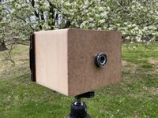
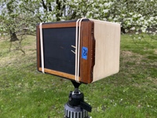
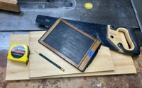
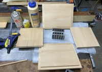
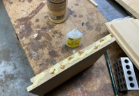
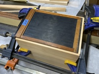
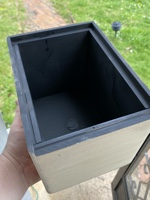
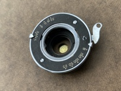
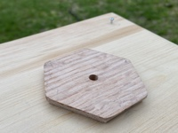
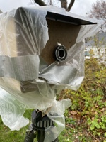

WPPD Camera, 5x7
| The 4x5-inch pinhole camera that I built a couple of years ago has been a lot of fun. Still, 4x5 images are a little small for display when contact printing. Of course that issue is readily solved. Simply build a bigger camera!
| |||
|  |
Larger cameras are bulkier, and their film costs higher. Despite those factors though, I've wanted a 5x7 camera for a while. The 5x7-inch format is a more practical size when contact printing images, without the further expense and bulk of jumping all the way to the 8x10 format. Anticipating the inevitable addition to my collection, I had even picked up some old wooden 5x7 film holders at some point along the way.
In an odd twist of fate, the final catalyst for this camera was the weather. Or more specifically, the weather of April 26, 2020. |
 | |
|---|---|---|---|
|
Photographers around the globe have joined together in collaboration to celebrate the low-tech fun of pinhole photography on the last Sunday of April for each of the last 20 years. Anyone with interest can participate, and the primary rule for inclusion in the official WPPD gallery is that your image be made with a pinhole camera on the official day. In this case, April 26, 2020.
Unfortunately we had a heavily overcast sky here in Connecticut that morning, along with a discouraging amount of wind and rain. These conditions are not conducive to the long exposures typically required with pinhole photography. | |||
|
I watched the weather for hours. Just after lunch time I finally accepted that the conditions were unlikely to significantly improve before dark. Well, if I wasn't going to be able to get outside to shoot, I could at least head for the workshop and participate in spirit by building a new camera. Yes, I could have taken a photo indoors, but for whatever reason that never came to mind.
My earlier 4x5 camera has a relatively wide angle view. Its focal length is 75mm, or about 3 inches, and gives a horizontal angle of view of 80 degrees. This is approximately the same as a 21mm lens on a 35mm camera. I didn't want my new 5x7 camera to be quite that wide, and so planned a 6-inch focal length to give a 60 degree angle of view. This is about the same as a 30mm lens on a 35mm camera. The main box is constructed from a piece of clear pine that was salvaged from a neighbor's recent kitchen remodel. I assembled it with simple rabbets and Titebond II glue. The addition of a little cyanoacrylate instant adhesive provided a glue clamp, so I could keep moving. Machinist's 123 blocks and one of my film holders helped ensure the assembly was square and properly sized. | |||
|  |  |  |  |
|
A piece of 1/8-inch masonite beckoned from a dusty workshop corner, offering itself up as a quick and easy front panel, and soon had a center hole to accept an old press shutter that I have had for years. I formed the 0.020-inch pinhole in some 0.001-inch thick brass shim stock, using some 1200-grit sandpaper and a straight pin. It is mounted to a small disk of masonite that I threaded into the rear of the shutter assembly. I originally mounted the pinhole on the aft face of the disk, and found the resulting geometry slightly obscured the corners, as seen in my WPPD image below. Moving it to the front of the disk now provides full coverage at the film plane. The corners got a quick pass over my belt sander to soften the edges, and a couple of coats of flat black paint finished the interior. A few months earlier I had made a few hexagonal quick release tripod plates from oak for the 4x5 camera, and had a spare. I glued this plate to the base of the new camera. A few screws suggest the viewing angle to help composition, and provided quick and dirty anchors for the rubber bands that I am using initially to secure the film holders. Although the outer surfaces weren't yet sealed, and it would clearly never be confused for fine woodworking, the camera was ready for testing about 4 ½ hours after cutting the first piece of wood. The weather was still raining and windy, but it wasn't dark yet, and most importantly, it was still Worldwide Pinhole Photography Day. I had to give it a try. I loaded a holder with Harmon Direct Positive paper, grabbed a scrap of plastic for rain shield, and headed for the backyard. | |||
|

Flat black paint controls internal reflections |

Shutter & brass pinhole |

Tripod quick release plate made from oak |

Weather protection for its first photo |
|
Direct positive paper is quite slow, with an effective ISO around 5. Coupled with the pinhole's effective aperture of f300 and the poor light, my calculated exposure was nearly 45 minutes. The shutter was open for an hour while we had dinner, and as you can see, I should have gone longer to adequately compensate for reciprocity failure and the fading light.
In the end I was pleased to both build and test a new camera on my first Worldwide Pinhole Photography Day, despite the decidedly "moody" first exposure. I've made a few more images in better weather since then, and look forward to continued future results with this larger format. |

|
|
Copyright 2020, Thayer Syme | |